Lecture 4: Exposure (Continued)
1. Amount of Available Light
上节课我们强调过「选择正确的时间点」的重要性：晨曦和傍晚的光线柔和，色彩丰满，是户外摄影的不二选择。但有时候，拍摄环境中的曝光条件并不理想，摄影师也可以借助一些技巧来获得合适的曝光。
当同一个场景中出现较大的光比时，可以采用包围曝光 (bracketing) 拍摄多张曝光程度不同的照片，再利用相机自带或者图像处理软件的后期功能，将这些照片合成，降低对比度；当场景中的光线过强时，容易在照片主体上产生强光和阴影，此时可以利用反光板 (reflector) 将光线反射到拍摄主体，得到更柔和一些的光线，同时减少阴影。如果没有专业的反光板，白纸 (white sheet) 和车的遮阳板 (sun visor) 都是不错的选择；当光线太弱时，可以借助人造光线，如台灯、球灯、闪光灯，来点亮场景；在一些特殊场景下，必要时也可以通过刻意过曝 (over-exposure) 或低曝 (under-exposure) 来表达主体。
但即便有上述技巧存在，对户外摄影来说，「选择正确的时间点」依然是最需要优先保证的事情。
2. Metering
光度计 (light meter) 是相机内部最重要的组件之一，负责测光，具备测光能力就意味着相机自身能够对当前场景中的光线强弱形成认知。在光度计中，很重要的一个概念就是「中间灰」 (middle grey)。简单来说，中间灰是在人眼感知 (perception) 下亮度位于黑和白正中间的一种灰色。基于中间灰，相机可以进一步建立亮度级别：
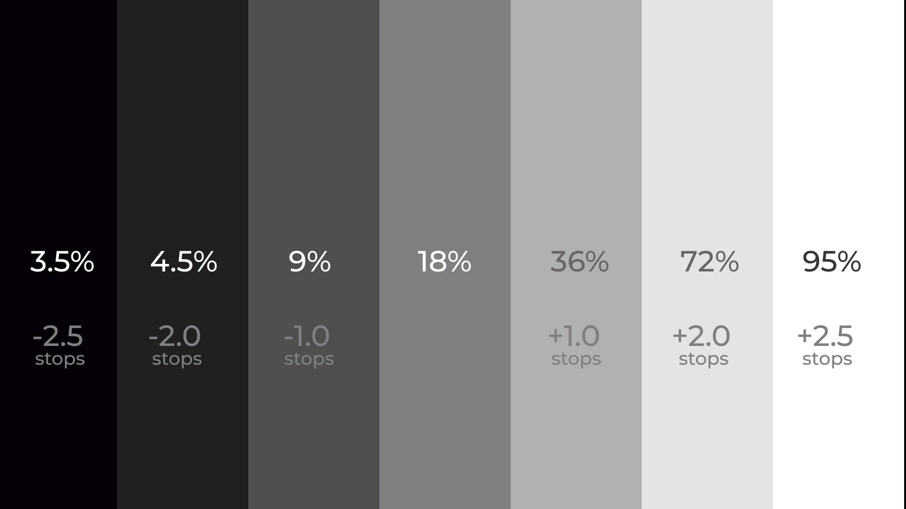
当场景中的光线进入相机时，相机会将场景划分成若干个方块区域，然后分别将每个小区域划分到某个亮度等级中，如下图所示：
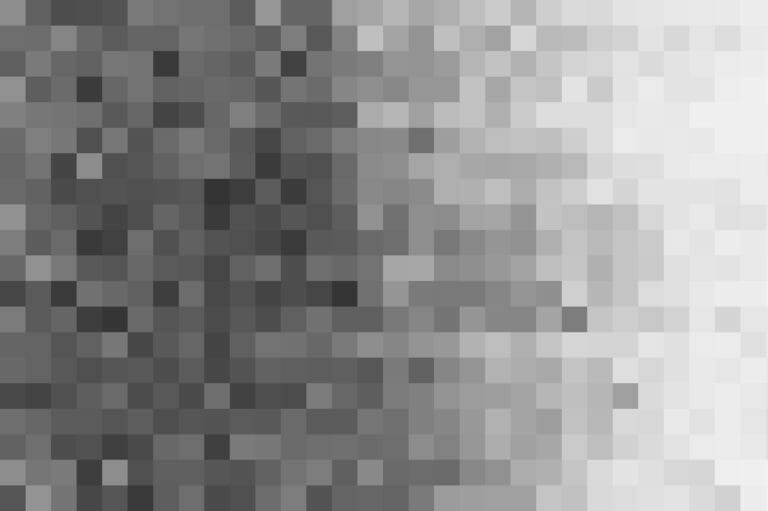
然后根据预设的权重计算出整张图亮度的加权平均值，得到测光结果。不同的测光模式对图中不同区域设置的权重不同，通常专业相机提供点测光 (spot)、中央重点平均测光 (center-weighted)、区域测光 (zone) 等测光模式。
2.1 Spot Metering
点测光的权重分布如下图所示：
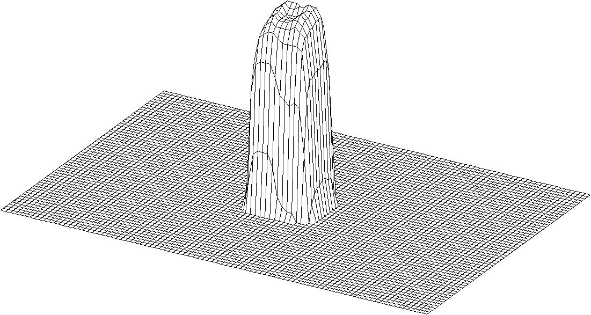
即给予测光点周围很小的一块区域高权重，精确地告诉相机测光位置。当主体与非主体区域光比较高时，你也许需要刻意将非主体区域过曝或低曝，才能让主体的曝光正确，这时就可以利用这种测光模式。如果场景中存在合适的参照物，也可以利用参照物测光，后者可以通过先测光，后锁定曝光，再构图和对焦来实现。
2.2 Center-Weighted Metering
中央重点平均测光的权重分布如下图所示：

拍摄者会习惯性的将主体放到场景的中央，因此给予越中心的区域越大的权重是一个符合拍摄者直觉的方案。但对于摄影师来说，中央构图通常不是好的选择，将主体放到中央会使得画面呆板，失去动感，很多情况下 1/3 构图是更好的选择。因此中央重点平均测光有时候对于摄影师来说不是最佳选择。
2.3 Zone Metering
区域测光中的区域就是上文提到的方块区域，每个厂商切分的方块个数、大小，评价的算法不尽相同，因此区域测光也是各个厂商自由发挥的地方，可以采用不同的策略，如给对焦区域更多的权重。区域测光并不完美，只是给到摄影师手中的一个选择。
3. Exposure Compensation
相机测光有时候并不准确，因为光度计是基于中间灰运作，遇到整体偏亮或偏暗的场景就会出现问题。想象一个整体偏亮的场景，如雪地、白沙滩，对于光度计来说，整个场景是过曝的，因此在非手动模式下，相机会通过自动调节曝光参数来减少曝光。但雪地、白沙滩本身就是一个明亮的场景，对于人来说，明亮的场景并不意味着过曝。此时，摄影师只能通过调节曝光补偿的方式来纠正相机的错误，如下图所示：
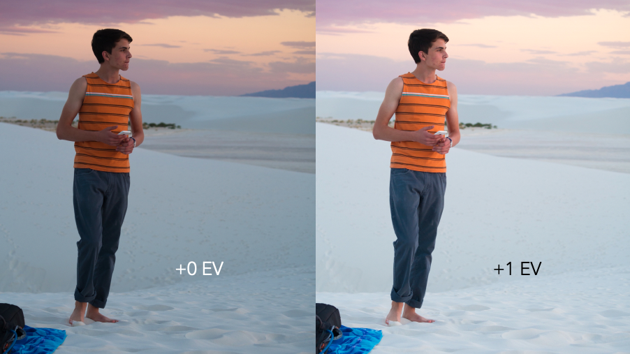
类似地，在一个整体偏暗的场景，如日落剪影，对于光度计来说，整个场景是低曝的，因此在非手动模式下，相机会通过自动调节曝光参数来增加曝光。但剪影本身就是一个昏暗的场景，对于人来说，人影主体就应该是黑暗的，并不意味着低曝，如果相机增加了曝光，则会让剪影的特殊意境消失。此时就需要减小曝光补偿。
以上两类场景，可以被概括为「白加黑减」。在实践中，通常比较小的曝光补偿，如 1/3 stops，就能满足需求。此外，还要注意增减曝光补偿时，可能会带来副作用。比如通过延长快门时间增加曝光，可能使得手持拍照的照片变模糊。
4. Camera Modes
许多相机会内置各种拍摄模式，通常「越专业的相机拍摄模式越少」，如下图所示：
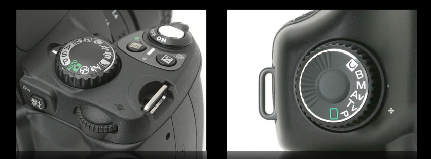
上图中，左边是普通机型 Nikon d40x，主拨盘上有许多模式，包括 A (光圈优先)、S (快门优先)、P (程序自动)、M (手动模式)、人像模式、风景模式、运动模式等等；右边是高端机型 Canon 5D，主拨盘上只有 Av (光圈优先)、Tv (快门优先)、P (程序自动)、M (手动)、B (bulb)。
对于大部分摄影师来说，99% 以上的时间使用的都是光圈优先模式。假设 ISO 固定，光圈优先就是摄影师选择 F-number，相机选择快门速度。因为 F-number 可选的范围较少，通常在 F4 - F16 之间；而快门速度的可选范围很大，通常在 1/4000s 到 30s 之间。选定一个 F-number，相机很容易找到合理的快门速度，反之则不然。快门优先则是摄影师选择快门速度，相机选择 F-number，在一些捕捉运动瞬间的场景中常被使用。手动模式则是将所有参数放开给摄影师使用。在需要超长时间曝光，如拍摄星轨时，则会选择 B 模式。
本质上，其它模式就是帮助拍摄者调节曝光参数，如雪地模式增加曝光补偿；人像模式选择最小的 F-number；风景模式降低 ISO；运动模式提高快门速度……
专业摄影师具备相机曝光的基本知识，这足以让他们对各种场景应对自如，因此专业相机通常不提供如人像、风景、运动等模式。
5. Flash Photography
对于一般的拍摄者来说，打开闪光灯通常会毁了照片。在讨论它之前，先了解一下 inverse square law。
5.1 Inverse Square Law
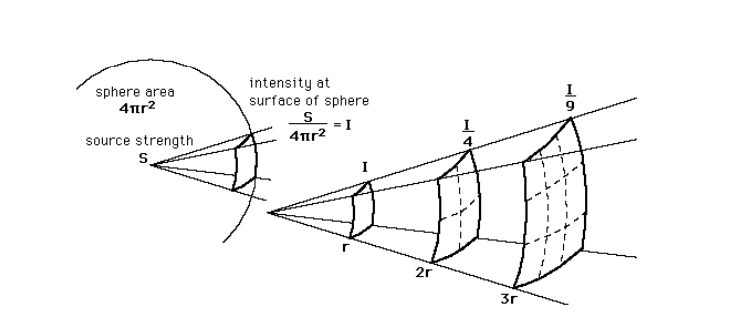
ISL 指：在点光源下，相同面积的受光区域接收到的光强度与它和点光源距离的平方成反比。如 2 倍的距离可获得 1/4 强度的光。这也是为什么在低亮度环境下，打开闪光灯会使得主体变量，背景变暗。这也是为什么我们常常能看到打开闪光灯的人像照片中，人脸惨白而不自然，背景由近及远迅速变暗。
5.2 Guide Number
每个闪光设备会有一个 GN 帮助摄影师推算其它曝光参数，这里暂略。
5.3 X-Sync Speed
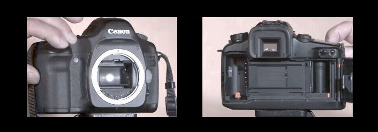
闪光灯的速度通常为 1/6400s。在 Lecture 1 中曾经介绍快门的工作原理和背后的机械结构。如果想使用闪光灯拍照，就必须让闪光的整个过程，快门完全打开。当设置很短的快门时间时，快门甚至不会在某一瞬间完全打开，这时候如果使用闪光灯就可能让画面出现白色的光柱。通常称在闪光灯拍摄下，最小的安全快门速度为 X-Sync Speed，在佳能相机中是 1/200s 或 1/250s。
5.4 High Speed Photography
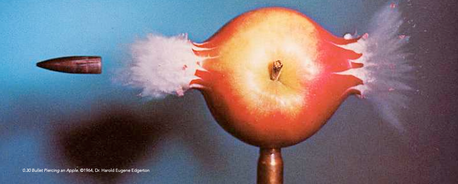
在暗室中，通过长曝光、闪光灯、电路组合的方式可以拍摄出上述这样的子弹照片。有兴趣可以了解一下 [Dr. Edgerton](https://en.wikipedia.org/wiki/Doc_Edgerto) 的工作。
5.5 Gone Wrong
下图是 Dan (授课老师) 的哥哥拍摄的一张照片：
照片中存在的问题包括：红眼 (red eyes)、曝光时间较长 (2s) 导致云变模糊、地上的阴影比较生硬。红眼产生的原因在于闪光灯光线直射入眼睛后通过视网膜反射回到相机镜头，使得相机捕获到眼睛内部的色彩。内置在相机上的闪光灯通常与相机镜头距离很近：
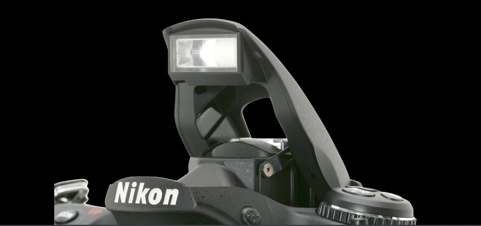
因此闪光灯发出的光线角度与镜头角度几乎相同。红眼的一种解决的办法就是拉开相机镜头和闪光灯的距离：
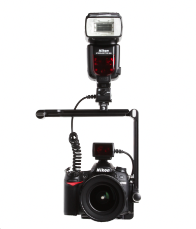
避免人眼反射的光线进入相机镜头。同时，由于闪光灯、镜头与主体间形成的夹角变大，画面主体的影子角度也变得更大，对画面造成的影响也将变小。
5.6 Curtain Sync Flash
前面提到，在 X-Sync 曝光时间内，会有一段充足的时间留给闪光灯发挥，假设为 1/400s，闪光灯闪光的时间很短，假设为 1/6400s，那么闪光的这段时间是放在快门刚打开时好，还是快门快关闭时好？前者被称为 front curtain sync，后者被称为 rear curtain sync。在实践中，摄影师应当根据具体情况具体分析。
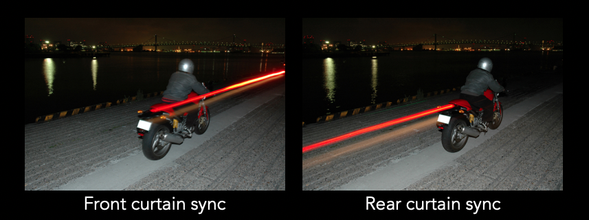
5.7 Stroboscopes
一些专业闪光灯具备频闪 (stroboscope) 功能，能按固定时间间隔闪光，配合暗室或弱光环境，就可以捕捉主体的连续运动行为，如：
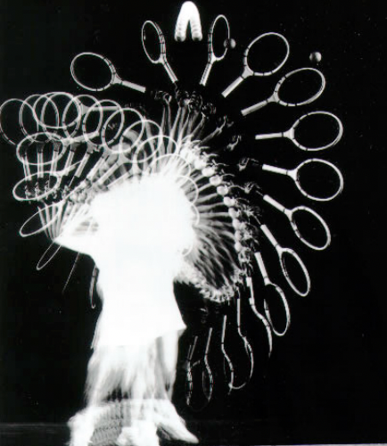
5.8 Flash Fill
在背光时，可以通过闪光灯来补光，如：
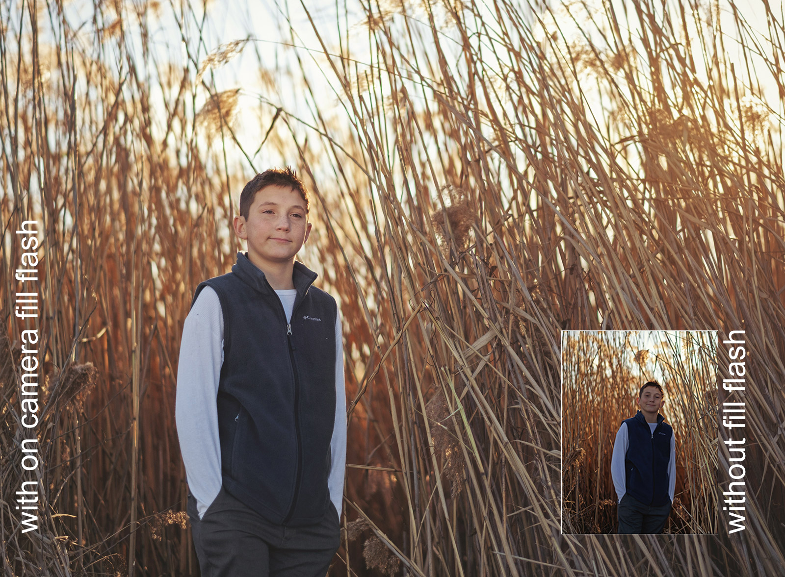
6. Critique Examples
6.1 City Sky
评价：
- 前景太空、太黑，没啥用处
- 右上角的指示牌被截断了，让人感觉是无意中拍进来的
6.2 Conductor
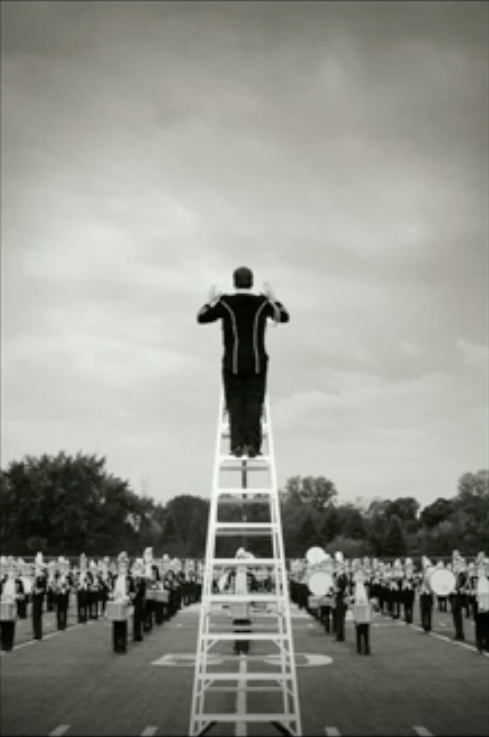
说明：游行乐团训练中，指挥者站在梯子上指挥乐团演奏。因为画面中的颜色和光比不太协调，因此改成黑白模式。
夸赞：
- 将彩色照片转成黑白照片在这里可以防止观众因为色彩而分心
- 指挥家的手部姿态很好
- 梯子本身的引导线、地面上的引导线，都能将观众的眼神引到照片主体身上
挑刺：
- 如果在指挥者头上有一架直升机就更好了
- 通常不会把主体放在照片中间 (反对观点：尽管指挥家在画面正中间，但画面整体并不是对称的，画面下部细节多，上部细节少，因此仍然有动感)
- 如果能让正中间的乐手露脸就更好了 (反对观点：没有露脸正好表现气氛凝重)
- 也许可以减少天空的比例，横向构图，展现更多的乐手 (笔者个人觉得不是个好建议)